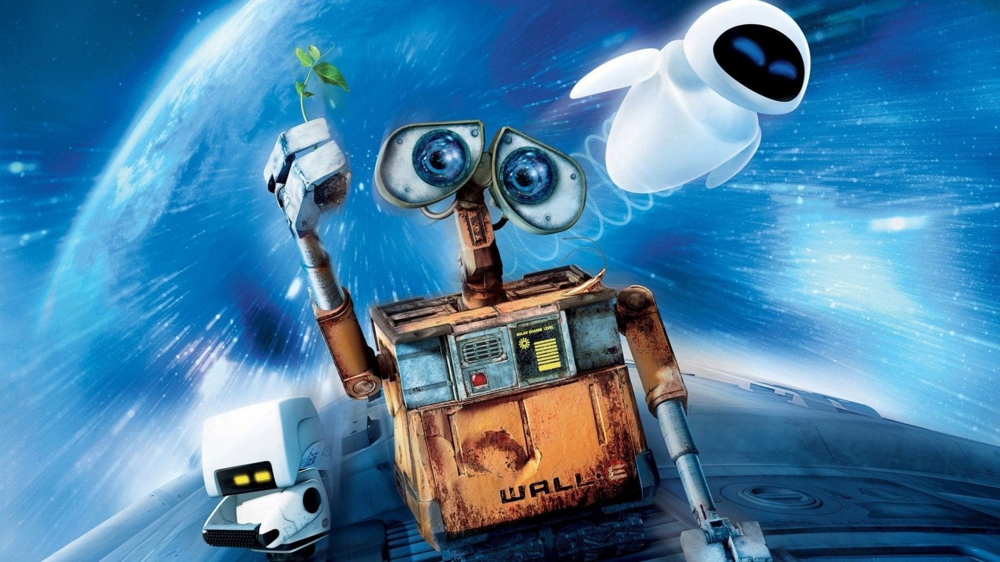

About WALL•E
WALL•E is a small, sentient, and curious waste-collecting robot who is the last of his kind left on Earth. He has a box-like appearance, with caterpillar tracks for movement and a pair of expressive binocular-like eyes. WALL•E is equipped with various tools for compacting and organizing trash, which he diligently collects and stacks into tall skyscraper-like structures. Despite his humble and seemingly monotonous existence, WALL•E possesses a charming and inquisitive personality, demonstrating curiosity about the remnants of human civilization and a desire for companionship which we can see in his relationship with EVE, another robot.
WALL•E & his friends
WALL•E's Characteristics
- He's cute
- He's rusty
- He's capable of forming emotional connections
- He's hardworking and diligent in his duties
WALL•E's Friends
WALL•E has some amazing friends, with EVE being his closest companion, perhaps even something more to him. Click on the links below to learn more about them.